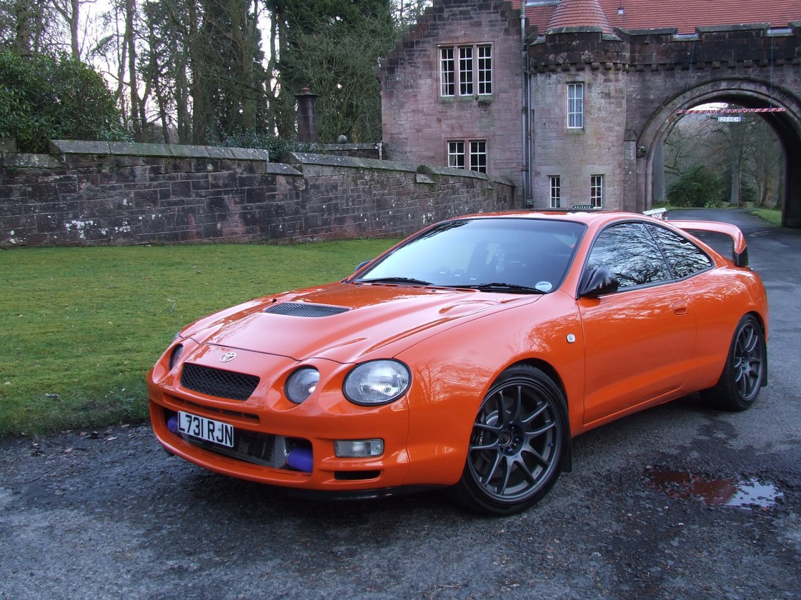

Mercado Teillo
Vendo o cambio
Flamante Toyota celica GT4 como nuevo

- Modelo: Toyota Celica GT4
- Año: 1994
- Motor: turboalimentado de 4 cilindros
- Potencia: 300 caballos de fuerza
- Transmisión: Tracción en las cuatro ruedas con transmisión manual
- Velocidad Máxima: 240-260 km/h
- Aceleración 0-60 mph: 5-6 segundos
- Frenos: Discos ventilados en las cuatro ruedas con ABS
- Suspensión: Suspensión deportiva ajustable
- Peso: 1,500 kg
- Carrocería: Estilo deportivo coupé